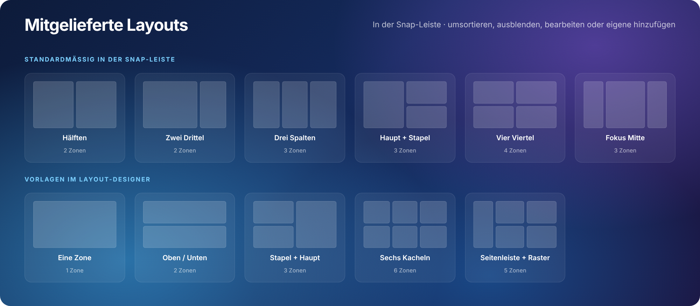
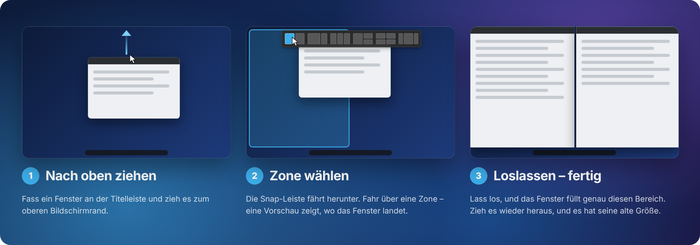
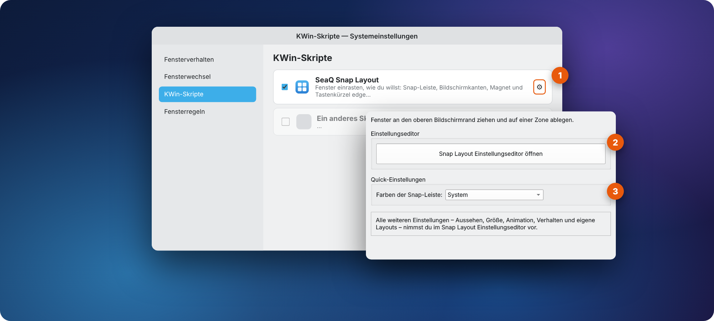
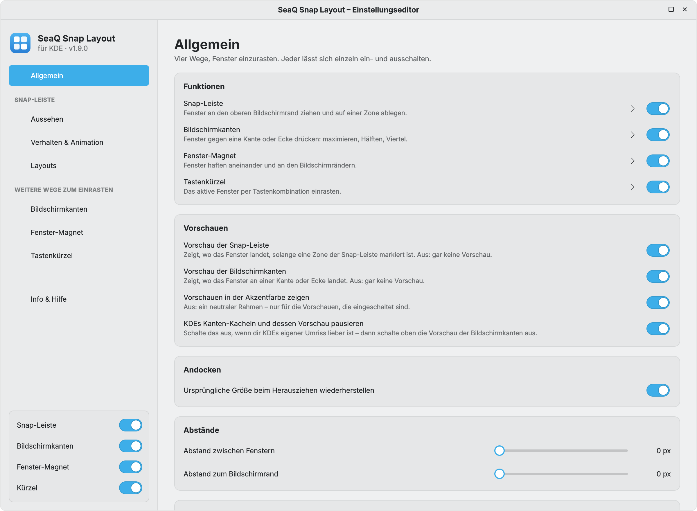
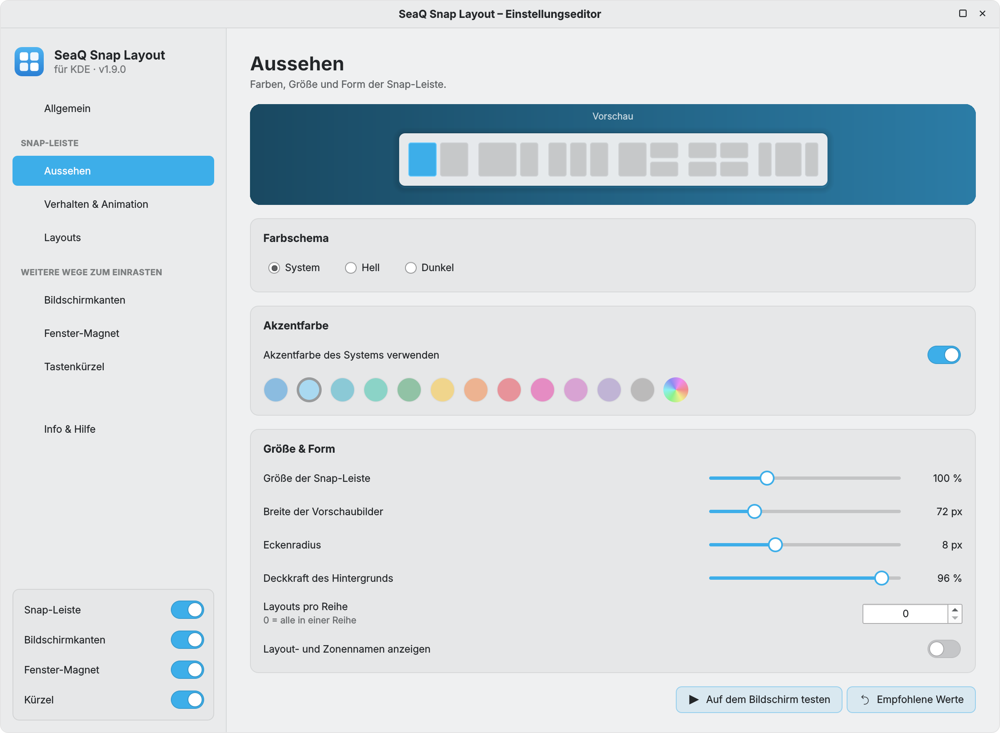
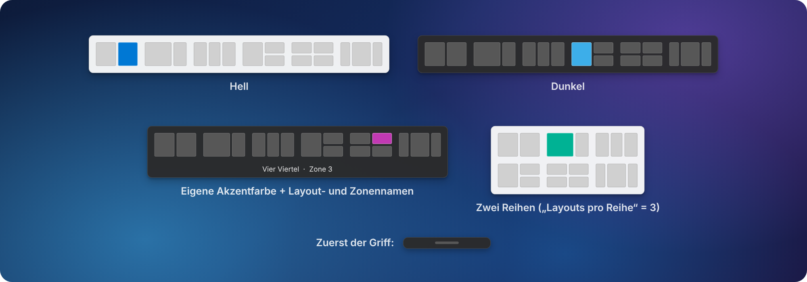
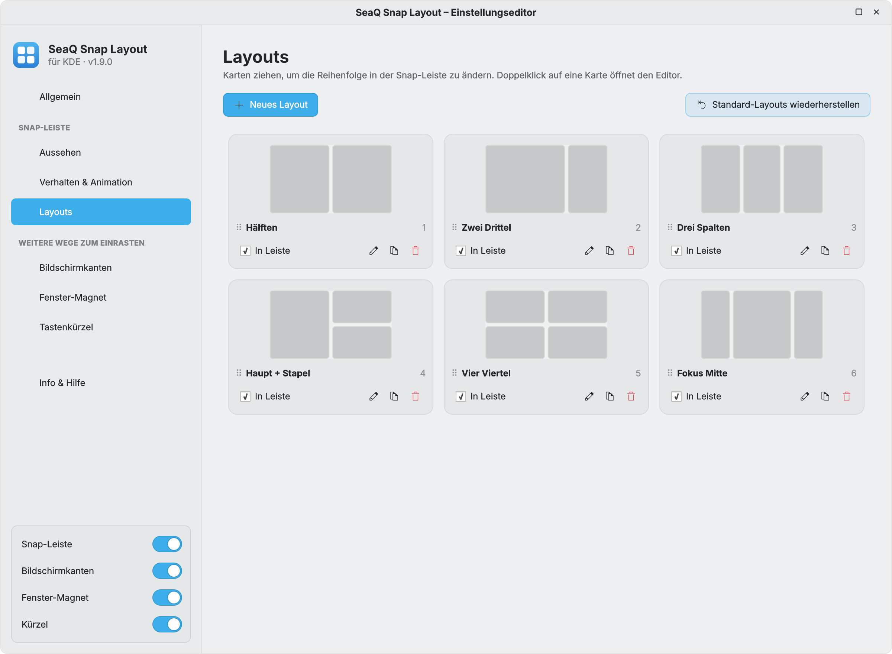
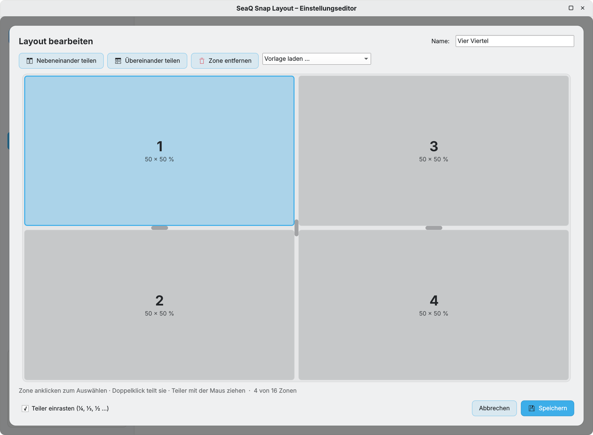

Anleitung
SeaQ Snap
Layout
Snap-Layouts für KDE Plasma 6.
Snap-Leiste, Bildschirmkanten, Fenster-Magnet und Tastenkürzel.
Version 1.9.0
KWin-Skript für Plasma 6 · Wayland & X11
SeaQ
github.com/SeaQSoft/SeaQ-Snap-Layout
SeaQ Snap Layout · AnleitungInhalt
Inhalt
Alles, was SeaQ Snap Layout kann, Seite für Seite – vom ersten Einrasten bis zu eigenen Layouts.
- 1Einführung3
- 2Die Snap-Leiste im Überblick4
- 3Installation5
- 4Schnellstart – dein erstes Einrasten6
- 5Einstellungen öffnen7
- 6Der Einstellungseditor8
- 6.1 Allgemein · 6.2 Aussehen · 6.3 Verhalten & Animation · 6.4 Layouts · 6.5 Layout-Designer
- 6.6 Bildschirmkanten · 6.7 Fenster-Magnet · 6.8 Tastenkürzel · 6.9 Info & Hilfe
- 7Tastenübersicht19
- 8Sprachen20
- 9Empfohlene Werte21
- 10Probleme & FAQ22
- 11Dateien, Deinstallation & Lizenz23
So liest du diese Anleitung
1Orange Zahlen in einem Bildschirmfoto zeigen auf ein Bedienelement. Die Liste unter dem Bild erklärt jedes davon.
Knopf Graue Beschriftungen sind Text, den du auf dem Bildschirm siehst: Knöpfe, Schalter, Menüeinträge.
befehl Text in Festbreitenschrift wird in ein Terminal eingegeben.
TippIdeen, die den Alltag schneller machen.
HinweisHintergrundwissen, das sich lohnt.
WichtigLies das, bevor du weitermachst.
BildschirmfotosDie Bilder zeigen das helle Breeze-Farbschema auf Deutsch. Auf deinem Desktop nutzt SeaQ Snap Layout deine eigenen Farben und deine Systemsprache.
SeaQ Snap Layout 1.9.02
SeaQ Snap Layout · Anleitung1 · Einführung
SeaQ Snap Layout bringt Snap-Layouts auf KDE Plasma 6. Zieh ein Fenster zum oberen Bildschirmrand, eine Leiste mit Layouts fährt herunter, und du legst das Fenster auf der Zone ab, wo es hin soll. Dazu kommen drei weitere Wege zum Einrasten – jeder lässt sich einzeln ein- und ausschalten.

⇡Ziehen, ablegen, fertigKeine Tastenkürzel nötig – es funktioniert mit der Mausbewegung, die du schon kennst.
▦Eigene LayoutsSechs fertige Layouts und ein Designer für jede beliebige Aufteilung – bis zu 16 Zonen.
◐Passt zu deinem DesktopSystem-, helle oder dunkle Farben, jede Akzentfarbe. Der Editor nutzt dein Farbschema, deine Dekoration und Sprache.
⏱Fühlt sich richtig anAbstände, Verzögerungen, Geschwindigkeit und sechs Bewegungskurven – ein herausgezogenes Fenster bekommt seine alte Größe zurück.
⇲BildschirmkantenFenster gegen eine Kante oder Ecke drücken: maximieren, Hälften, Viertel – passend um bereits eingerastete Fenster herum.
⊟Fenster-MagnetFenster haften beim Verschieben und Größe-Ändern aneinander und an den Bildschirmrändern.
⌨Tastenkürzel20 Aktionen – Hälften, Viertel, Drittel, maximieren, zentrieren. Fertige Tastenschemata oder eigene Tasten.
⚙Reines KWin-SkriptKein zusätzliches Programm im Hintergrund. Mit zwei Klicks aus dem KDE Store installiert.
Was ist eine „Zone“?Ein Layout teilt den Bildschirm in Bereiche, zum Beispiel zwei Hälften oder drei Spalten. Jeder Bereich ist eine Zone. Die Snap-Leiste zeigt jedes Layout als kleines Bild des Bildschirms; jedes Rechteck darin ist eine Zone, auf der du ein Fenster ablegen kannst.
SeaQ Snap Layout 1.9.03
SeaQ Snap Layout · Anleitung2 · Die Snap-Leiste im Überblick
2
Kapitel 2
Die Snap-Leiste im Überblick
Die Snap-Leiste erscheint nur, während du ein Fenster verschiebst. Sonst nimmt sie keinen Platz auf dem Bildschirm ein.
1Griff – eine kleine Pille, die zuerst erscheint, wenn das Fenster dem oberen Rand nahe kommt. Sie zeigt, dass die Leiste bereit ist.
2Snap-Leiste – fährt herunter, sobald der Mauszeiger den oberen Rand erreicht. Sie erscheint immer auf dem Bildschirm, auf dem du arbeitest.
3Layout – ein kleines Bild deines Bildschirms. Die Leiste zeigt alle Layouts mit Haken bei In Leiste.
4Zone – ein Bereich eines Layouts. Fahr mit der Maus darüber, um ihn zu wählen.
5Markierte Zone – in der Akzentfarbe. Lässt du jetzt die Maus los, rastet das Fenster hier ein.
6Namenszeile (optional) – zeigt Layout- und Zonennamen, z. B. „Vier Viertel · Zone 3“.
Die Landevorschau
Solange eine Zone markiert ist, zeigt ein durchscheinendes Rechteck in der Akzentfarbe auf dem Desktop genau, wo das Fenster landet – inklusive Abständen und Leisten. Entfernst du dich von der Leiste, verschwindet die Vorschau.
Mitgelieferte Layouts

SeaQ Snap Layout 1.9.04
SeaQ Snap Layout · Anleitung3 · Installation
SeaQ Snap Layout ist ein KWin-Skript. Es wird in deinen Home-Ordner installiert, braucht keine Administratorrechte und fügt kein Hintergrundprogramm hinzu.
| Voraussetzung | Details |
|---|
| Desktop | KDE Plasma 6 (KWin 6) – Wayland oder X11 |
| Distribution | Beliebig: Fedora, Arch, openSUSE, KDE neon, Kubuntu, Debian … |
| Zusätzliche Pakete | Keine – alles Nötige ist in Plasma enthalten |
Variante A – KDE Store (empfohlen)
- Öffne Systemeinstellungen → Fensterverwaltung → KWin-Skripte.
- Klicke oben rechts auf Neue holen …, suche nach SeaQ Snap Layout und klicke auf Installieren.
- Setze den Haken neben SeaQ Snap Layout und klicke auf Anwenden.
Variante B – Datei von GitHub
- Lade
kdesnaplayout-<version>.kwinscript von der Seite Releases herunter.
- Klicke in KWin-Skripte auf Aus Datei installieren … und wähle die Datei.
- Setze den Haken bei SeaQ Snap Layout und klicke auf Anwenden.
Variante C – Terminal
# installieren
kpackagetool6 --type KWin/Script --install kdesnaplayout-1.9.0.kwinscript
# auf eine neuere Version aktualisieren
kpackagetool6 --type KWin/Script --upgrade kdesnaplayout-1.9.0.kwinscript
# einschalten
kwriteconfig6 --file kwinrc --group Plugins --key kdesnaplayoutEnabled true
qdbus6 org.kde.KWin /KWin reconfigure
Nach einem Update: einmal abmeldenKWin behält ein geladenes Skript im Speicher. Melde dich nach der Installation einer neuen Version einmal ab und wieder an, damit die neuen Dateien verwendet werden. Die Version siehst du im Einstellungseditor auf der Seite Info & Hilfe.
SeaQ Snap Layout 1.9.05
SeaQ Snap Layout · Anleitung4 · Schnellstart
4
Kapitel 4
Schnellstart – dein erstes Einrasten
Drei Bewegungen, etwa zwei Sekunden.

- Fass ein Fenster an der Titelleiste und halte die linke Maustaste gedrückt.
- Zieh es nach oben. Etwa 140 px unter dem oberen Rand erscheint ein kleiner Griff. Weiter, bis der Mauszeiger den oberen Rand berührt – die Snap-Leiste fährt herunter.
- Zeig auf eine Zone. Sie leuchtet in deiner Akzentfarbe auf, und eine Vorschau auf dem Desktop zeigt, wo das Fenster landet.
- Lass los. Das Fenster füllt genau diese Zone.
Doch nicht?
Bewege den Mauszeiger von der Leiste weg oder lass das Fenster irgendwo außerhalb los. Nichts rastet ein, und die Leiste fährt wieder hoch.
Die alte Größe zurückbekommen
Fass ein eingerastetes Fenster und zieh es weg – es bekommt die Größe zurück, die es vor dem Einrasten hatte. Abschalten kannst du das auf der Seite Allgemein.
Welche Fenster können einrasten?
Normale, in der Größe veränderbare Fenster. Dialoge, Vollbildfenster und Programme auf deiner Ausnahmeliste zeigen nie die Snap-Leiste.
Mehrere Bildschirme?
Die Leiste öffnet sich auf dem Bildschirm unter dem Mauszeiger, und die Zonen füllen dessen freien Bereich – Leisten bleiben frei.
Kein doppeltes EinrastenPlasma hat eigene Kanten-Kacheln und Einrastzonen. SeaQ Snap Layout pausiert sie automatisch, solange es läuft, sodass nur ein Helfer reagiert – in den Systemeinstellungen musst du nichts ändern, und deine KDE-Einstellungen bleiben, wie sie sind.
SeaQ Snap Layout 1.9.06
SeaQ Snap Layout · Anleitung5 · Einstellungen öffnen
5
Kapitel 5
Einstellungen öffnen
Ein KWin-Skript hat kein eigenes Programmsymbol. Seine Einstellungen erreichst du über das Zahnrad in den Systemeinstellungen, das ein kleines Schnellmenü öffnet.

- Öffne Systemeinstellungen → Fensterverwaltung → KWin-Skripte und klicke auf das Zahnrad 1 neben SeaQ Snap Layout.
- Klicke auf Snap Layout Einstellungseditor öffnen 2. Der Knopf wird in deiner Akzentfarbe gefüllt, und der Hinweis „Bereit – jetzt auf OK klicken, um den Einstellungseditor zu öffnen.“ erscheint.
- Klicke auf OK. Der Einstellungseditor öffnet sich innerhalb etwa einer Sekunde.
Quick-Einstellungen
3Farben der Snap-Leiste schaltet die Snap-Leiste zwischen System, Hell und Dunkel um, ohne den Editor zu öffnen. Alles andere – Aussehen, Größe, Animation, Verhalten und eigene Layouts – stellst du im Einstellungseditor ein.
Warum der zusätzliche Klick?Die Systemeinstellungen speichern das Schnellmenü erst, wenn du OK oder Anwenden drückst. SeaQ Snap Layout bemerkt den gespeicherten Knopfdruck und öffnet seinen Editor. Der Knopf lässt sich beliebig oft benutzen.
SeaQ Snap Layout 1.9.07
SeaQ Snap Layout · Anleitung6 · Der Einstellungseditor
6
Kapitel 6
Der Einstellungseditor
Ein Fenster, acht Seiten. Jede Änderung wird sofort gespeichert und angewendet – es gibt keinen Anwenden-Knopf.

1
2
3
4
5
6
7
1Titelleiste – ziehen verschiebt das Fenster, Doppelklick maximiert. Höhe, Schrift und Ausrichtung folgen deiner Fensterdekoration.
2Fensterknöpfe – maximieren/wiederherstellen und schließen, in Reihenfolge und Stil deiner Dekoration.
3Name und Version des installierten Skripts.
4Snap-Leiste – Aussehen, Verhalten & Animation und Layouts der Leiste am oberen Rand.
5Weitere Wege zum Einrasten – Bildschirmkanten, Fenster-Magnet und Tastenkürzel.
6Funktionsschalter – Snap-Leiste, Bildschirmkanten, Fenster-Magnet und Kürzel mit einem Klick ein- oder ausschalten.
7Seitenbereich – die Einstellungen sind in Karten gruppiert. Empfohlene Werte unten auf einer Seite setzt diese Seite zurück.
Passt zu deinem SystemDer Editor nutzt dein Farbschema, deine Akzentfarbe, Fensterdekoration und Systemsprache – und folgt Änderungen live, solange er offen ist. Knöpfe, Schalter und Schieberegler erscheinen in deiner Akzentfarbe.
SeaQ Snap Layout 1.9.08
SeaQ Snap Layout · Anleitung6.1 · Allgemein
6.1
Einstellungseditor
Allgemein
Wähle, welche Wege zum Einrasten du willst, steuere die Vorschauen und lass Platz zwischen den Fenstern.
1
2
3
| Einstellung | Was sie bewirkt | Standard |
|---|
| 1Funktionen | Vier unabhängige Schalter: Snap-Leiste, Bildschirmkanten, Fenster-Magnet, Tastenkürzel. Der Pfeil daneben öffnet jeweils die passende Seite. Dieselben Schalter sitzen unten in der Seitenleiste. | alle an |
| 2Vorschauen | Vorschau der Snap-Leiste und Vorschau der Bildschirmkanten, jeweils einzeln – aus bedeutet gar keine Vorschau. Akzentfarbe – aus zeichnet einen neutralen Rahmen. KDEs Kanten-Kacheln pausieren blendet KDEs eigenen Umriss aus. | alle an |
| 3Ursprüngliche Größe beim Herausziehen wiederherstellen | Ein eingerastetes Fenster, das du wegziehst, bekommt seine frühere Größe zurück – auch nach dem Einrasten über Kanten oder Tastatur. | An |
| Abstand zwischen Fenstern | Platz zwischen benachbarten Zonen (0 – 48 px). Gilt für Leiste, Kanten, Tastenkürzel und – wenn du willst – den Magnet. | 0 px |
| Abstand zum Bildschirmrand | Platz zwischen den Zonen und den Rändern des freien Bildschirmbereichs (0 – 48 px). | 0 px |
| Ausgenommene Anwendungen | Fensterklassen, die nie einrasten – eine pro Zeile (Kommas und Semikolons gehen auch). Groß-/Kleinschreibung egal. | leer |
Fensterklasse herausfindenÖffne Systemeinstellungen → Fensterverwaltung → Fensterregeln → Neu hinzufügen … → Fenstereigenschaften ermitteln und klicke auf das Programmfenster. Der Wert unter Fensterklasse (zum Beispiel krita oder steam) ist das, was du hier einträgst.
SeaQ Snap Layout 1.9.09
SeaQ Snap Layout · Anleitung6.2 · Aussehen
6.2
Einstellungseditor
Aussehen
Farben, Größe und Form der Snap-Leiste. Die Live-Vorschau oben zeigt jede Änderung sofort.

1
2
3
4
5
6
7
8
9
1Vorschau der Snap-Leiste mit deinen aktuellen Einstellungen.
2Farbschema – System folgt deinen Plasma-Farben; Hell und Dunkel sind fest. Standard: System.
3Akzentfarbe des Systems verwenden – markiert Zonen in deiner Plasma-Akzentfarbe. Standard: an.
4Farbfelder – zwölf fertige Akzentfarben. Vorher ③ ausschalten.
5Eigene Farbe – der Regenbogenkreis öffnet eine Farbauswahl (siehe unten).
6Größe & Form – vier Schieberegler, siehe Tabelle.
7Layouts pro Reihe – 0 zeigt alle Layouts in einer Reihe; jede andere Zahl verteilt die Leiste auf mehrere Reihen.
8Layout- und Zonennamen anzeigen unter den Vorschaubildern. Standard: aus.
9Auf dem Bildschirm testen spielt die Snap-Leiste auf deinem Desktop ab, damit du das Ergebnis beurteilen kannst.
| Größe & Form | Was sie bewirkt | Standard | Bereich |
|---|
| Größe der Snap-Leiste | Skaliert die ganze Leiste – praktisch auf hochauflösenden Bildschirmen. | 100 % | 60 – 200 % |
| Breite der Vorschaubilder | Breite jedes Layout-Bildes; die Höhe folgt dem Seitenverhältnis deines Bildschirms. | 72 px | 48 – 160 px |
| Eckenradius | Rundung der Leiste. 0 ergibt eckige Ecken. | 8 px | 0 – 24 px |
| Deckkraft des Hintergrunds | Wie durchsichtig der Leistenhintergrund ist. | 96 % | 40 – 100 % |
SeaQ Snap Layout 1.9.010
SeaQ Snap Layout · Anleitung6.2 · Aussehen – Farben
Farben und Stile
Ein paar Kombinationen der Aussehen-Einstellungen.

Eine eigene Akzentfarbe wählen
- Schalte Akzentfarbe des Systems verwenden aus.
- Klicke auf den Regenbogenkreis am Ende der Farbfelder. Darunter öffnet sich die Farbauswahl.
- Wähle den Farbton auf dem Streifen, dann Helligkeit und Sättigung im Quadrat.
- Oder gib einen genauen Wert wie
#3daee9 in das Hex-Feld ein.
Farben der Leiste vs. des EditorsFarbschema und Akzentfarbe auf dieser Seite ändern nur die Snap-Leiste. Der Einstellungseditor selbst nutzt immer deine Systemfarben.
SeaQ Snap Layout 1.9.011
SeaQ Snap Layout · Anleitung6.3 · Verhalten & Animation
6.3
Einstellungseditor
Verhalten & Animation
Wann die Leiste erscheint, wann sie wieder verschwindet und wie sie sich bewegt. Die Standardwerte orientieren sich an Windows 11.
| Einblenden | Was sie bewirkt | Standard | Bereich |
|---|
| AAuslöseabstand zum oberen Rand | Wie nah der Mauszeiger dem oberen Rand kommen muss, bevor die ganze Leiste öffnet. | 24 px | 2 – 200 px |
| Zuerst einen kleinen Griff zeigen | Zeigt den Griff auf dem Weg nach oben, damit die Leiste nie überraschend aufspringt. | An | An / Aus |
| BAbstand, ab dem der Griff erscheint | Abstand zum oberen Rand, ab dem der Griff erscheint. | 140 px | 20 – 400 px |
| CAktive Breite am oberen Rand | Nur dieser mittige Teil des oberen Rands reagiert. 100 % = die ganze Breite. | 100 % | 10 – 100 % |
| Verzögerung bis zum Ausfahren | Wartezeit, bevor die Leiste öffnet. Verhindert das Öffnen beim Vorbeifahren. | 40 ms | 0 – 600 ms |
| Ausblenden | Was sie bewirkt | Standard | Bereich |
|---|
| DAbstand, bis die Leiste wieder einfährt | Wie weit du dich unter die Leiste bewegen kannst, bevor sie schließt – ein Sicherheitsabstand. | 56 px | 0 – 300 px |
| Verzögerung bis zum Einfahren | Wartezeit nach dem Verlassen dieses Bereichs, bevor die Leiste hochfährt. | 150 ms | 0 – 1000 ms |
SeaQ Snap Layout 1.9.012
SeaQ Snap Layout · Anleitung6.3 · Verhalten & Animation
1Einblenden – siehe Tabelle auf der vorigen Seite.
2Ausblenden – siehe Tabelle auf der vorigen Seite.
3Animation – siehe unten.
4Animation testen spielt die Leiste mit den aktuellen Werten ab.
| Animation | Was sie bewirkt | Standard | Bereich |
|---|
| EWie weit die Leiste herunterfährt | Abstand zwischen dem oberen Rand des freien Bildschirmbereichs und der geöffneten Leiste. | 12 px | 0 – 150 px |
| Dauer beim Herunterfahren | Wie lange die Leiste zum Herunterfahren braucht. | 220 ms | 0 – 1000 ms |
| Dauer beim Zurückfahren | Wie lange das Hochfahren dauert. Kürzer wirkt flotter. | 150 ms | 0 – 1000 ms |
| Bewegungskurve | Der Charakter der Bewegung – siehe Kurven unten. | Sanft | 6 Kurven |
| Beim Ein- und Ausfahren überblenden | Blendet die Leiste während der Bewegung ein und aus. | An | An / Aus |
Bewegungskurven
Jede Kurve hat ein passendes Gegenstück fürs Hochfahren – Ausblenden fühlt sich an wie rückwärts abgespieltes Einblenden.
Langsamer PC oder Fernzugriff?Setze beide Dauern auf 0 ms und schalte das Überblenden aus – dann erscheint die Leiste sofort.
SeaQ Snap Layout 1.9.013
SeaQ Snap Layout · Anleitung6.4 · Layouts
6.4
Einstellungseditor
Layouts
Wähle, welche Layouts in der Snap-Leiste erscheinen und in welcher Reihenfolge.

1
2
3
4
5
6
7
8
9
1Neues Layout – legt ein Layout an und öffnet den Designer.
2Standard-Layouts wiederherstellen – holt die sechs mitgelieferten Layouts zurück. Fragt vorher, weil eigene Layouts und Reihenfolge verloren gehen.
3Layout-Karte – ein Bild des Layouts. Doppelklick zum Bearbeiten.
4Ziehgriff ⠿ – zieh eine Karte an eine andere Stelle, um die Reihenfolge in der Leiste zu ändern.
5Position in der Snap-Leiste (1 = links).
6In Leiste – Haken entfernen, um ein Layout aus der Leiste auszublenden, ohne es zu löschen.
7Bearbeiten ✎ – öffnet den Layout-Designer (bei Karte 1 gezeigt).
8Duplizieren – kopiert das Layout als Ausgangspunkt für eine Variante (Karte 2).
9Löschen – entfernt das Layout nach einer Rückfrage (Karte 3).
Reihenfolge ändern
- Drück die Maustaste auf einer Karte und halte sie.
- Zieh sie an die gewünschte Position – die anderen Karten weichen aus.
- Loslassen. Die neue Reihenfolge wird gespeichert und beim nächsten Öffnen der Leiste verwendet.
SeaQ Snap Layout 1.9.014
SeaQ Snap Layout · Anleitung6.5 · Layout-Designer
6.5
Einstellungseditor
Layout-Designer
Teile den Bildschirm, wie du willst – bis zu 16 Zonen pro Layout.

1
2
3
4
5
6
7
8
9
10
1Name des Layouts, angezeigt auf der Karte und in der Namenszeile.
2Nebeneinander teilen – teilt die gewählte Zone in eine linke und eine rechte Hälfte.
3Übereinander teilen – teilt die gewählte Zone waagerecht.
4Zone entfernen – löscht die gewählte Zone; ihr Nachbar übernimmt den Platz.
5Vorlage laden … – startet mit einem von elf fertigen Layouts.
6Gewählte Zone – Zone anklicken zum Auswählen. Nummer und Größe in % stehen darin. Doppelklick teilt sie entlang der längeren Seite.
7Teiler – ziehen ändert die Größe der Zonen auf beiden Seiten.
8Zonenzähler – zeigt, wie viele der 16 möglichen Zonen belegt sind.
9Teiler einrasten – Teiler rasten bei ¼, ⅓, ½, ⅔ und ¾ ein.
10Abbrechen / Speichern – Änderungen verwerfen oder behalten.
Beispiel: ein großer Hauptbereich mit zwei kleinen Zonen rechts
- Klicke auf der Seite Layouts auf Neues Layout und gib einen Namen ein, z. B. Fokus + 2.
- Klicke auf Nebeneinander teilen und zieh den Teiler auf ⅔.
- Wähle die rechte Zone und klicke auf Übereinander teilen. Dann Speichern.
SeaQ Snap Layout 1.9.015
SeaQ Snap Layout · Anleitung6.6 · Bildschirmkanten
6.6
Weitere Wege zum Einrasten
Bildschirmkanten
Drück ein Fenster gegen eine Kante oder Ecke des Bildschirms, und es füllt diesen Teil aus. Funktioniert mit oder ohne Snap-Leiste.
¼
Obere Kante
maximieren
¼
Linke
Hälfte
Rechte
Hälfte
¼
Untere Hälfte
¼
Kanten – die Mitte der linken oder rechten Kante gibt eine Hälfte, die untere Kante die untere Hälfte, die obere Kante maximiert (oder was du wählst).
Ecken – der äußere Teil jeder Kante (standardmäßig 20 %) gibt das Viertel in dieser Ecke.
Ein kleiner Stoß – das Fenster muss 60 ms an der Kante anliegen, damit bloßes Vorbeifahren nichts auslöst.
Intelligentes Füllen
Die Kanten berücksichtigen immer, was schon eingerastet ist. Hälften und Viertel überdecken nie ein eingerastetes Fenster, und die obere Kante füllt nur den freien Platz darüber.
Unten nichts eingerastet → die obere Kante maximiert.
Unten liegt ein Viertel → nur die obere Hälfte wird gefüllt.
| Einstellung | Was sie bewirkt | Standard | Bereich |
|---|
| Bildschirmkanten verwenden | Hauptschalter, unabhängig von der Leiste. | An | An / Aus |
| Obere Kante | Was die obere Kante tut. | Maximieren | Maximieren · Vollbild ·
Obere Hälfte · Aus |
| Linke und rechte Kante | Halber Bildschirm. | An | An / Aus |
| Untere Kante | Untere Hälfte. | An | An / Aus |
| Ecken | Viertel des Bildschirms. | An | An / Aus |
| Intelligentes Füllen | Rücksicht auf eingerastete Fenster. | An | An / Aus |
| Abstand zur Kante | Nähe des Zeigers zur Kante. | 4 px | 1 – 40 px |
| Andruck-Verzögerung | Anliegezeit an der Kante, 0 = sofort. | 60 ms | 0 – 600 ms |
| Eckengröße | Seitenanteil, der als Ecke zählt. | 20 % | 5 – 40 % |
| Halten zum Auffüllen | Wächst bis zum nächsten Fenster. | An · 700 ms | 200 – 2000 ms |
Halten zum Auffüllen · KDEs KachelnHalte das Fenster 0,7 s länger an der Kante – es wächst bis zum nächsten Fenster. KDEs Kanten-Kacheln pausieren solange, deine KDE-Einstellungen bleiben unverändert.
SeaQ Snap Layout 1.9.016
SeaQ Snap Layout · Anleitung6.7 · Fenster-Magnet
6.7
Weitere Wege zum Einrasten
Fenster-Magnet
Während du ein Fenster verschiebst oder seine Größe änderst, haften seine Kanten an nahen Fenstern und an den Bildschirmrändern. Funktioniert ohne Snap-Leiste und ohne Bildschirmkanten.
| Einstellung | Was sie bewirkt | Standard | Bereich |
|---|
| Fenster-Magnet verwenden | Hauptschalter. | An | An / Aus |
| Einrastabstand | Wie nah eine Kante kommen muss, bevor sie einrastet. Größer = stärkerer Magnet. | 16 px | 2 – 64 px |
| Widerstand gegen Überlappen | Ein Fenster bleibt an der Kante eines anderen stehen und löst sich erst, wenn du es so weit hineinschiebst. 0 = Fenster dürfen frei überlappen. | 48 px | 0 – 200 px |
| An anderen Fenstern haften | Kanten richten sich an den Kanten anderer sichtbarer Fenster auf demselben Bildschirm aus. | An | An / Aus |
| An den Bildschirmrändern haften | Kanten richten sich am freien Bildschirmbereich aus (Leisten werden berücksichtigt). | An | An / Aus |
| Auch beim Ändern der Größe | Auch die gezogene Kante haftet – die anderen Kanten bleiben, wo sie sind. | An | An / Aus |
| Abstand zwischen Fenstern beibehalten | Fenster halten den Abstand zwischen Fenstern von der Seite Allgemein ein, statt sich zu berühren. | Aus | An / Aus |
Klebende Kanten
Fenster, die sich berühren, teilen sich ihre Kante. Änderst du die Größe eines davon, folgen die anderen live – nichts überlappt, keine Lücke entsteht, und der Abstand zwischen ihnen bleibt, wie er war.
| Einstellung | Was sie bewirkt | Standard |
|---|
| Berührende Fenster gemeinsam in der Größe ändern | Die gemeinsame Kante jedes Fensters, das dem veränderten gegenüberliegt, wandert mit. Kanten am Bildschirmrand werden nie gekoppelt. | An |
| Gestapelte Fenster in einer Linie halten | Fenster übereinander halten ihre linken und rechten Kanten zusammen, Fenster nebeneinander ihre oberen und unteren. | An |
| Schütteln zum Lösen | Schüttle beim Größe-Ändern die Maus, und die anderen Fenster springen zurück. | An |
| Andere Fenster ausblenden | Beim Größe-Ändern werden Fenster, die nicht mitgehen, durchsichtig angezeigt. | An |
Plasma hat auch einen MagnetSolange der Magnet an ist, pausiert SeaQ Snap Layout Plasmas eigene Einrastzonen, damit nur ein Magnet an einem Fenster zieht (KDEs Einrastzonen pausieren, solange der Magnet an ist). Deine KDE-Einstellungen werden nicht geändert – schalte es aus, deaktiviere oder entferne das Skript, und Plasmas Einrasten ist wieder da.
SeaQ Snap Layout 1.9.017
SeaQ Snap Layout · Anleitung6.8 · Tastenkürzel
6.8
Weitere Wege zum Einrasten
Tastenkürzel
Das aktive Fenster mit der Tastatur einrasten. Das sind normale globale KDE-Kurzbefehle – du findest sie auch unter Systemeinstellungen → Kurzbefehle → KWin.
1Tastenkürzel verwenden – aus lässt die Tasten belegt, sie tun aber nichts. Der Schalter Kürzel in der Seitenleiste ist derselbe.
2Tastenschema – wähle einen fertigen Satz und klicke auf Anwenden: Alle 16 Einrast-Aktionen bekommen ihre Tasten auf einmal (siehe Kapitel 7).
3Alle zurücksetzen – gibt jeder Aktion wieder die Taste des gewählten Schemas.
4Eine Zeile pro Aktion – zeigt die Tasten als Tastenkappen. Der Stift öffnet den Editor; der Pfeil ↶ erscheint, wenn eine Taste vom Schema abweicht, und setzt sie zurück.
Eine einzelne Taste ändern
- Klicke auf die Aktion, z. B. In die linke Hälfte. Darunter öffnet sich ein Editor.
- Übliche Kombinationen – ein Klick wählt dieselbe Taste mit den Zusatztasten jedes Schemas, z. B. Ctrl+Alt+Left, Meta+Left, Meta+Shift+Left.
- Eigene Kombination – schalte Meta Ctrl Alt Shift um, wähle die Taste aus der Liste (Buchstaben, Ziffern, Pfeile, F1–F12, Ziffernblock …) und klicke auf Setzen.
- Auf Standard zurücksetzen holt die Taste des gewählten Schemas zurück, Entfernen löscht die Taste dieser Aktion.
Wenn eine Taste schon belegt ist
SeaQ Snap Layout fragt KDEs Kurzbefehl-Dienst, bevor es eine Taste setzt. Hat eine andere Aktion sie schon, nennt eine orange Karte den Besitzer – zum Beispiel „Ctrl+Alt+F wird von „Kalender anzeigen“ verwendet“:
- Übernehmen – nimmt der anderen Aktion die Taste weg und gibt sie SeaQ Snap Layout.
- Alle übernehmen – macht das für jeden Konflikt in der Liste.
- Behalten – lässt alles, wie es ist; diese Aktion bleibt ohne Taste.
SeaQ Snap Layout 1.9.018
SeaQ Snap Layout · Anleitung7 · Tastenübersicht
Die 16 Einrast-Aktionen mit ihren Tasten im Standardschema und im Ziffernblock-Schema. Die vier An/Aus-Aktionen haben standardmäßig keine Taste (Seite 20). Die Tasten stehen so da, wie KDE sie speichert: Ctrl = Strg, Shift = Umschalt, Return = Eingabe.
| Aktion | Standard – Strg+Alt | Ziffernblock |
|---|
| Hälften |
| In die linke Hälfte | Ctrl+Alt+Left | Ctrl+Alt+Num+4 |
| In die rechte Hälfte | Ctrl+Alt+Right | Ctrl+Alt+Num+6 |
| In die obere Hälfte | Ctrl+Alt+Up | Ctrl+Alt+Num+8 |
| In die untere Hälfte | Ctrl+Alt+Down | Ctrl+Alt+Num+2 |
| Viertel |
| Ins Viertel oben links | Ctrl+Alt+U | Ctrl+Alt+Num+7 |
| Ins Viertel oben rechts | Ctrl+Alt+I | Ctrl+Alt+Num+9 |
| Ins Viertel unten links | Ctrl+Alt+J | Ctrl+Alt+Num+1 |
| Ins Viertel unten rechts | Ctrl+Alt+K | Ctrl+Alt+Num+3 |
| Drittel |
| Ins linke Drittel | Ctrl+Alt+D | – |
| Ins mittlere Drittel | Ctrl+Alt+F | – |
| Ins rechte Drittel | Ctrl+Alt+G | – |
| In die linken zwei Drittel | Ctrl+Alt+E | – |
| In die rechten zwei Drittel | Ctrl+Alt+Y | – |
| Fenster |
| Maximieren oder wiederherstellen | Ctrl+Alt+Return | Ctrl+Alt+Num+5 |
| Fenster zentrieren | Ctrl+Alt+C | Ctrl+Alt+Num+0 |
| Größe von vor dem Einrasten wiederherstellen | Ctrl+Alt+- | – |
Andere Schemata
Dieselben Tasten, andere Zusatztasten – gezeigt für In die linke Hälfte. Keine Kürzel entfernt alle Tasten.
| Schema | Beispiel |
|---|
| Meta+Strg+Alt + Taste | Meta+Ctrl+Alt+Left |
| Meta + Taste (KDE-Stil) | Meta+Left – ersetzt Plasmas eigene Kacheltasten |
| Meta+Umschalt + Taste | Meta+Shift+Left |
| Strg+Umschalt+Alt + Taste | Ctrl+Shift+Alt+Left |
| Strg+Alt + Ziffernblock | Ctrl+Alt+Num+4 – Drittel und Wiederherstellen bekommen keine Taste |
Leicht zu merkenPfeiltasten geben Hälften. U I / J K liegen auf der Tastatur wie die vier Viertel; D F G sind die drei Drittel von links nach rechts, E und Y die zwei Drittel. Auf dem Ziffernblock zeigt jede Taste dorthin, wo das Fenster hingeht.
SeaQ Snap Layout 1.9.019
SeaQ Snap Layout · Anleitung6.9 · Info & Hilfe · 8 · Sprachen
6.9
Einstellungseditor
Info & Hilfe
Unterstützen – Mit PayPal spenden (paypal.me/SeaQSoft) und Buy me a coffee (buymeacoffee.com/seaq) öffnen deinen Browser. Darunter: wie das Einrasten funktioniert, die weiteren Wege, wie man den Editor öffnet, und:
- Version – die installierte Version. Nach einem Update prüfen.
- Autor – SeaQ
- Lizenz – GPL-3.0-or-later
- Einstellungsdatei – wo deine Einstellungen und Layouts gespeichert sind.
Kürzel für die Funktionen
Vier weitere Aktionen haben standardmäßig keine Taste und kommen so nie deinen eigenen Kürzeln in die Quere. Gib ihnen eine Taste auf der Seite Tastenkürzel oder unter Systemeinstellungen → Kurzbefehle → KWin (Suche „Snap Layout“).
| Aktion | Was sie bewirkt |
|---|
| Snap-Leiste an/aus | Pausiert die Snap-Leiste oder setzt sie fort – wie ihr Schalter in der Seitenleiste. |
| Bildschirmkanten an/aus | Pausiert die Bildschirmkanten oder setzt sie fort. |
| Fenster-Magnet an/aus | Pausiert den Fenster-Magnet oder setzt ihn fort. |
| Snap-Leiste testen | Spielt die Snap-Leiste auf dem aktuellen Bildschirm ab. |
Einstellungseditor, Schnellmenü, Kürzelnamen und Layoutnamen folgen deiner Systemsprache (Systemeinstellungen → Region & Sprache). 62 Sprachen sind enthalten – alle europäischen Sprachen sowie Chinesisch (vereinfacht und traditionell), Japanisch, Koreanisch, Hindi, Bengalisch, Tamil, Telugu, Marathi, Gujarati, Punjabi, Urdu, Arabisch, Hebräisch, Persisch, Indonesisch, Malaiisch, Vietnamesisch, Thai, Filipino, Georgisch, Armenisch und mehr. Sprachen, die von rechts nach links laufen, werden automatisch gespiegelt.
Beim Übersetzen helfenJede Sprache ist eine einfache Textdatei im Ordner i18n des Repositorys – eine Zeile pro Text. Korrekturen und neue Sprachen sind als Pull Requests willkommen.
SeaQ Snap Layout 1.9.020
SeaQ Snap Layout · Anleitung9 · Empfohlene Werte
9
Kapitel 9
Empfohlene Werte
Alle Standardwerte auf einen Blick. Empfohlene Werte auf jeder Seite stellt sie für diese Seite wieder her.
| Allgemein |
|---|
| Snap-Leiste · Kanten · Magnet · Kürzel | alle an |
| Vorschauen (Leiste, Kanten) | An |
| Vorschauen in Akzentfarbe | An |
| Ursprüngliche Größe zurück | An |
| Abstand zwischen Fenstern | 0 px |
| Abstand zum Bildschirmrand | 0 px |
| Ausgenommene Anwendungen | keine |
| Aussehen |
|---|
| Farbschema | System |
| Akzentfarbe des Systems | An |
| Größe der Snap-Leiste | 100 % |
| Breite der Vorschaubilder | 72 px |
| Eckenradius | 8 px |
| Deckkraft des Hintergrunds | 96 % |
| Layouts pro Reihe | 0 (eine Reihe) |
| Layout- und Zonennamen | Aus |
| Verhalten |
|---|
| Auslöseabstand | 24 px |
| Zuerst kleiner Griff | An |
| Griffabstand | 140 px |
| Aktive Breite | 100 % |
| Verzögerung Ausfahren | 40 ms |
| Abstand Einfahren | 56 px |
| Verzögerung Einfahren | 150 ms |
| Animation |
|---|
| Ausfahrweg | 12 px |
| Dauer Herunterfahren | 220 ms |
| Dauer Zurückfahren | 150 ms |
| Bewegungskurve | Sanft |
| Überblenden | An |
| Layouts in der Leiste |
|---|
| Hälften · Zwei Drittel · Drei Spalten · Haupt + Stapel · Vier Viertel · Fokus Mitte |
| Bildschirmkanten |
|---|
| Obere Kante | Maximieren |
| Seiten · unten · Ecken | An |
| Intelligentes Füllen | An |
| Abstand · Andruck · Ecke | 4 px · 60 ms · 20 % |
| Fenster-Magnet |
|---|
| Einrastabstand | 16 px |
| Fenster · Ränder · Größe ändern | An |
| Abstand beibehalten | Aus |
| Widerstand | 48 px |
| Klebende Kanten · Linie · Schütteln · Ausblenden | An |
| Tastatur |
|---|
| Tastenschema | Strg+Alt + Taste |
SeaQ Snap Layout 1.9.021
SeaQ Snap Layout · Anleitung10 · Probleme & FAQ
Die Snap-Leiste erscheint nicht.
Prüfe, ob das Skript unter KWin-Skripte angehakt ist und der Schalter Snap-Leiste im Editor an ist. Das Programm darf nicht auf deiner Ausnahmeliste stehen, und du musst ein normales, in der Größe veränderbares Fenster an der Titelleiste ziehen. Liegt Aktive Breite am oberen Rand unter 100 %, fahr zur Mitte des oberen Rands.
Beim Ziehen an eine Kante passieren zwei Dinge.
Plasmas eigene Kanten-Aktionen oder Einrastzonen sind noch aktiv. Schalte KDEs Kanten-Kacheln und dessen Vorschau pausieren (Seite Bildschirmkanten) und KDEs Einrastzonen pausieren, solange der Magnet an ist (Seite Fenster-Magnet) ein – beide sind standardmäßig an.
Ein Tastenkürzel tut nichts.
Prüfe den Schalter Kürzel und ob die Taste auf der Seite angezeigt wird. Schnappt sich ein anderes Programm die Taste zuerst, wähle ein anderes Schema oder eine andere Taste.
Ich habe ein Update installiert, aber die alte Version läuft noch.
KWin behält geladene Skripte im Speicher. Melde dich einmal ab und wieder an. Die Seite Info & Hilfe zeigt die laufende Version.
Der Knopf im Schnellmenü tut nichts.
Nach Snap Layout Einstellungseditor öffnen musst du auf OK (oder Anwenden) klicken. Der Editor erscheint etwa eine Sekunde später.
„Could not locate package metadata“ in den KWin-Skripten.
Der Skriptordner wurde entfernt, während KWin ihn noch aufgelistet hatte. Installiere die .kwinscript-Datei erneut und melde dich ab und wieder an.
Funktioniert es mit mehreren Bildschirmen?
Ja. Die Leiste öffnet sich auf dem Bildschirm unter dem Mauszeiger, und die Zonen werden für diesen Bildschirm berechnet.
Es stimmt immer noch etwas nicht – wie melde ich es?
Sammle das Protokoll und öffne ein Issue auf GitHub:
journalctl --user -b | grep kdesnaplayout | tail -n 30
SeaQ Snap Layout 1.9.022
SeaQ Snap Layout · Anleitung11 · Dateien, Deinstallation & Lizenz
11
Kapitel 11
Dateien, Deinstallation & Lizenz
Wo alles gespeichert ist
| Pfad | Inhalt |
|---|
~/.config/kde-snaplayout.ini | Alle Einstellungen des Editors und deine Layouts. Kopiere die Datei, um deine Einrichtung auf einen anderen PC mitzunehmen. |
~/.config/kglobalshortcutsrc → [kwin] | Die Tasten der Kürzel (von KDE verwaltet). |
~/.config/kwinrc → [Script-kdesnaplayout] | Die zwei Werte des Schnellmenüs (Editor-Knopf, Farben der Snap-Leiste). |
~/.local/share/kwin/scripts/kdesnaplayout | Das installierte Skript. |
DatenschutzSeaQ Snap Layout arbeitet komplett offline. Es sendet keine Daten und liest Fensterpositionen nur, während du ein Fenster ziehst. Die Spenden-Knöpfe öffnen lediglich deinen Browser.
Deinstallieren
Klicke in KWin-Skripte auf den Papierkorb neben SeaQ Snap Layout und dann auf Anwenden. Oder im Terminal:
kpackagetool6 --type KWin/Script --remove kdesnaplayout
rm ~/.config/kde-snaplayout.ini # optional: Einstellungen löschen
Lizenz
SeaQ Snap Layout ist freie Software: Du kannst sie unter den Bedingungen der GNU General Public License, Version 3 oder (nach deiner Wahl) jeder späteren Version, weitergeben und/oder verändern. Sie wird in der Hoffnung verbreitet, dass sie nützlich ist, aber ohne jede Gewährleistung.

SeaQ Snap Layout
Gemacht von SeaQ
Quellcode & Issues: github.com/SeaQSoft/SeaQ-Snap-Layout
Auch im KDE Store
SeaQ Snap Layout 1.9.023